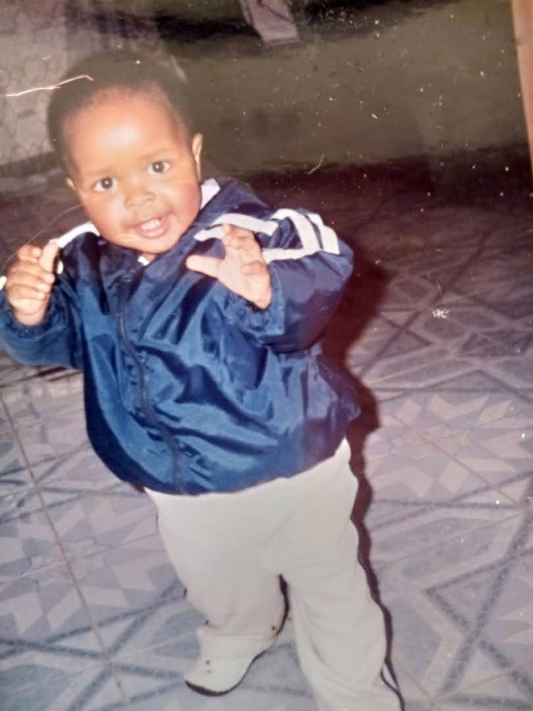

My name is Shemiramoth Mugo Maina. I was born on 13th of August in the year 2005 in Nairobi. Currently, I am still 17 years, 7 months. Since birth up to date I have stayed at my parents house in Juja.
 Childhood PhotoAt the age of 2 in 2008, I started kindargarten at Juja St.Peter's School. After 3 years I completed my kindargarten and graduated to primary school in second place out of a class of about 30. I battled my way through primary school for eight years which culminated in achieving 403/500 marks in my KCPE. In the first government selection, I was admitted at Baricho Boys Highschool in Kirinyaga however, Nairobi School ahd always been my dream school and by God's grace I managed to secure my admissin to my dream school. After four years of working smart, I completed my 4 year highschool course in 2022 with an aggregate of an A- of 79 points out of a possible 84 points. In Februrary 2023, I enrolled a two months Boot Camp in: coding, programming, web development and robotics at JKUAT where I am to date as I await KUCCPS to open their university placement portal.
 Graduation Photo
Graduation Photo
 Me being handed my KCPE results
Me being handed my KCPE results
Throughout my life, I have not only been able to have academic success but also I have been able to excel in differnet co-cirricular activities. I have played the following sports: football(as a defender and a goalkeeper), table tennis, badminton, chess and swimming. I own several chess tournament certificates whereby I have competed for my primary school up to the East African level held in Kampala, Uganda. I have also various medals that I got from the several swimming galas that I have competed in. I played mostly as a goalkeeper for our class's second football team where I have been able to not only make saves that has won us games but also very remarkable clean sheets. I joined the Model United Nations (MUN) club in highschool where I was able to climb the ranks till I was elected as the club president. Through this club, I have gained skills in public speaking and also leadership. I have attended three Sub-Saharan Model United Nations Conferences, one of which was at the UNEP headquarters in Nairobi.
 MUN committee meeting
MUN committee meeting
As currently I am attending a STEM Boot Camp, I am doing a project on creating a webpage. If any of my audience can be of help you can access my code My webpage code.
For more details or any interest, contact me on: +254791027339.